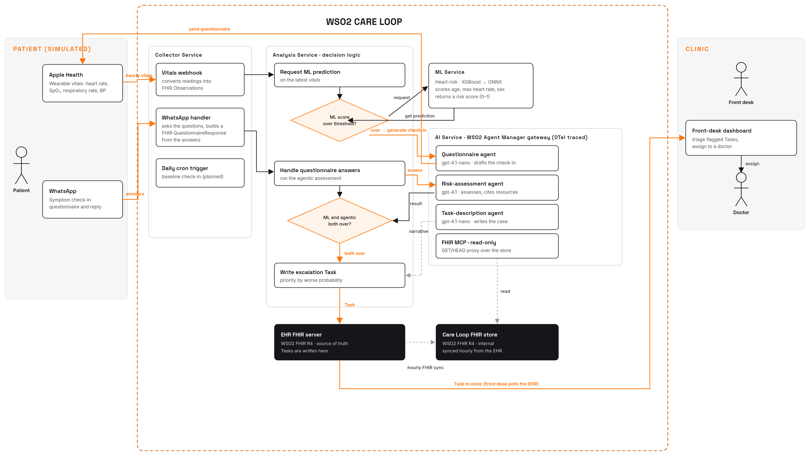

The Care Loop is a remote monitoring platform for heart failure. It watches a patient at home through a device they already wear and short symptom check-ins, continuously assesses whether they are trending toward a heart failure event, and raises a clear, prioritised case to their clinic when a concern holds up. A clinician always makes the final call. It is open source, built on HL7 FHIR R4 end to end, and designed to work alongside a clinic's existing records system rather than replace it.
This document sets out what the Care Loop is and who it is for (the functional case), how it is built and what AI it uses (the technical case), and how it has been thought through for real patients, clinicians, and health systems (the contextual case). A companion Supporting Evidence document carries the detailed clinical citations, FHIR resource examples, model card, and security detail.
1 The problem
Heart failure is one of the most common, deadly, and costly chronic conditions in the world, affecting an estimated 64 million people and rising as populations age. Its global cost runs to roughly US$346 billion a year. The form the Care Loop targets, heart failure with reduced ejection fraction (HFrEF), is the sharp end of it: five-year mortality runs as high as 43 to 75%, and only about a quarter of patients survive five years after a hospitalisation for it. Median survival after diagnosis is on the order of 1.7 years for men and 3.2 years for women.
The difficulty for patients is that the deterioration that lands them in hospital builds silently for days, often weeks, before they feel anything. The signs they are usually told to watch, like their weight, change late and unreliably, so by the time a patient feels sick enough to call, a problem that could have been handled at home has often become an emergency admission. The result is a costly revolving door: close to one in five heart failure patients is readmitted within 30 days, and roughly a third within a year.
For the providers managing these patients, mainly heart clinics and their front-desk staff and doctors, care is forced to be reactive. They cannot watch every patient every day, so they wait for deterioration to announce itself, usually in the emergency room. The window in which an early phone call, a medication adjustment, or a clinic visit could have kept the patient home passes unseen.
Sources for these figures are cited in full in Section 10 and in the Supporting Evidence document. The two-week early-warning window is the clinical opportunity the Care Loop is built to act inside.
2 What the Care Loop does
The Care Loop closes the gap between deterioration and response. It is a remote monitoring platform that quietly keeps an eye on a patient at home, and continuously assesses whether they are trending toward a heart failure event. When someone's risk starts to climb, the system reaches out with a quick, tailored symptom questionnaire, and if the concern holds up, it surfaces a clear, prioritised case to the clinic. The front desk routes it to a doctor for review or a telehealth consult.
The platform watches over a patient in two ways at once:
- Continuous vitals monitoring. Everyday readings from a wearable device flow in and are scored every hour, so a rising risk shows up across the day's scores, well before a patient notices something is wrong.
- Periodic symptom check-ins. A short, conversational questionnaire reaches the patient through a channel they already use, and an unscheduled, more urgent one goes out the moment vitals look concerning, so the platform asks the right question at the right time instead of waiting for the next routine visit.
The two streams feed a single, ongoing risk assessment. Most days, nothing happens, because most days a patient's vitals and symptoms simply confirm they are stable. The system is designed to stay out of the way until there is a genuine reason to raise a hand, and then to raise it clearly, with the evidence attached, so a clinic can act on a specific, well-supported concern rather than dig through raw noise.
A human clinician always makes the final call. The platform's role is to prioritise attention, not to diagnose or treat on its own. This is the difference between reacting to a crisis and preventing one: by watching continuously, the Care Loop can flag deterioration during the window in which it is still cheap and simple to handle, and spend a clinic's scarce attention on the patients who genuinely need it.
3 How a case moves through the loop
Meet Margaret Silva, 68. Three weeks ago she was admitted with an acute decompensation of HFrEF, stabilised, and discharged home on adjusted medication. She already wears a smartwatch, so her vitals flow in without her doing anything, and her check-ins arrive over a messaging app she uses every day. At discharge her clinic enrolled her, with her consent, in the Care Loop. From that point the platform watches passively in the background.
Broadly, a flagged case follows the same path regardless of what triggered it:
- Vitals arrive and are scored. Each hour, the patient's latest vitals are converted to FHIR, and a machine-learning model scores the heart-rate signal against the patient's age and sex to produce a risk score. Most hours this is unremarkable and nothing else happens.
- A concerning trend triggers a check-in. When the score crosses the escalation threshold, the platform asks an AI agent to draft a short, targeted symptom questionnaire and sends it to the patient, gathering the subjective context the numbers alone cannot give.
- The patient replies with almost no effort. Margaret answers a handful of plain-language questions on her phone. Low friction here is what makes remote monitoring actually work in practice.
- An agent weighs everything together. An agentic assessment combines the vitals trend, the questionnaire answers, and the patient's own record, pulled live from FHIR, into a reasoned judgement of risk with a clear "why".
- A prioritised case reaches the clinic. If both the model and the agent agree the concern is real, the platform writes a FHIR Task into the clinic's records system, prioritised by severity, with the supporting evidence linked.
- The clinic decides and acts. Front-desk staff triage the case and assign it to a doctor; the doctor reviews the consolidated summary and decides on next steps, whether a phone call, a medication change, a clinic visit, or a telehealth session, in time to keep Margaret out of hospital.
There are really two triggers behind this single path. The hourly vitals trigger always runs the model and only escalates when the numbers look off; this is the path the reference build implements today. A daily check-in is planned as the "nothing is on fire" baseline touchpoint for stable patients (see Section 9). Both converge on the same agentic assessment and the same decision to notify, so the clinic sees one consistent kind of case however it arose. The point throughout is that the platform's job is to notice and prioritise; the clinician's job is to decide and act.
4 The AI: ML scoring and an agentic assessment
The Care Loop uses AI in two distinct, deliberately separated roles. A small machine-learning model does the cheap, constant work of scoring every hour's vitals; a set of large-language-model agents does the occasional, expensive work of reasoning over a full clinical picture when the model flags something. Keeping them separate means the system can watch continuously without running an LLM on every reading, and reserve the deeper, more costly reasoning for the moments that warrant it.
4.1 The machine-learning risk model
A gradient-boosted model (XGBoost), trained on a public heart dataset and exported to the open ONNX format, scores the patient's heart-rate reading against their age and sex each hour and returns a risk score. It is served on its own runtime (ONNX Runtime) so it needs neither the original training stack nor a GPU. On a held-out test set it reaches a ROC-AUC of about 0.80; that figure demonstrates the scoring and serving capability, not deterioration-prediction performance, because the public dataset labels a different target. The other vitals (SpO₂, respiratory rate, blood pressure) are collected and stored as FHIR for the record and the agent's reasoning, but are not yet model inputs. This is intentionally a small, honest model over the few signals a watch and a health profile can actually supply, not a black box promising more than its inputs support; the model card, features, and full metrics are in the Supporting Evidence document, and its limits are stated plainly in Section 9.
4.2 The agentic clinical assessment
When the model escalates, the deeper analysis is handled by LLM agents built with Ballerina's native AI agent support. Rather than a single prompt, the work is split across purpose-built agents: one drafts the patient-facing symptom questionnaire from the recent vitals trend, one assesses risk by reasoning over vitals, active conditions, current medications, and history, and one writes the clinical case narrative for the front desk and doctor to read. Each agent reads the patient's live clinical data through a FHIR MCP tool, so it reasons over the real record rather than a stale copy.
The agents are constrained on purpose. The risk agent is told to assess and report only, never to decide whether to escalate or to recommend treatment; it must exclude resolved or inactive conditions from its reasoning, cite the specific FHIR resources that support its conclusion by their real identifiers, and never invent a detail. The escalation decision itself lives outside the agent, in a deterministic rule that requires both the model's probability and the agent's probability to clear their thresholds before a case is raised. The AI narrows and explains; it does not get the last word.
5 Built on HL7 standards
The Care Loop is HL7 FHIR R4 end to end. Every clinically meaningful thing the platform produces or reads is a FHIR resource, which is what lets it sit alongside a clinic's existing system instead of inventing a private data model. The moment a patient's watch reports vitals, they become FHIR Observation resources; the moment the platform reaches a decision, it becomes a FHIR Task the clinic's records system already understands.
| FHIR resource | Role in the Care Loop |
|---|---|
| Observation | Hourly vitals (heart rate, SpO₂, respiratory rate, systolic and diastolic blood pressure), each LOINC-coded with UCUM units. |
| Bundle | Each hour's vitals are delivered as a transaction Bundle, applied atomically to the store. |
| Questionnaire / QuestionnaireResponse | The AI drafts the symptom check-in in FHIR Questionnaire form (delivered as chat, not stored); the patient's answers are captured back as a persisted QuestionnaireResponse, structured FHIR rather than free text. |
| RiskAssessment | Both the ML score and the agentic judgement are recorded as RiskAssessment resources, the agentic one carrying its reasoning and an HL7-coded qualitative risk level. |
| Task | The prioritised case handed to the clinic, referencing the risk assessments, the questionnaire response, and the vitals that support it. |
| Patient, Encounter, Condition, MedicationRequest, AllergyIntolerance | The clinical record the agents reason over, read live from the EHR. |
Beyond the resources themselves, the platform uses standard terminologies throughout: LOINC for vitals, UCUM for units, SNOMED CT for conditions and allergies, RxNorm for medications, and HL7 code systems for observation categories and risk probability. Because everything is FHIR, the clinical data an agent reads is served through WSO2's open FHIR-to-MCP bridge (built on the Model Context Protocol, an open tool interface), so the AI reaches the record through a standard interface rather than bespoke glue. The Care Loop consumes and produces the same standards a conformant EHR already speaks, which is precisely what makes the next section possible.
6 Architecture and portability
The platform is a set of small, single-purpose services with three sides: the patient side, the Care Loop engine, and the clinic side. The clinic's EHR is the source of truth; the Care Loop keeps its own internal FHIR store in step with it through an hourly sync, and the clinic-facing dashboards read from these FHIR stores. The engine's own decision logic is centralised in one place rather than scattered across services. The integrations are written in Ballerina, an open-source integration language with first-class FHIR and healthcare libraries, which keeps the FHIR handling native rather than bolted on.

Two design choices matter most for a judge weighing real-world utility. First, the clinic's records system is swapped in, not replaced: the platform reads and writes standard FHIR R4, so any conformant FHIR server, and in turn any EHR fronted by one, can stand in the place the reference deployment uses. Second, the AI data access is read-only by construction: the agents reach clinical data only through the FHIR MCP bridge, which sits behind a proxy that physically refuses anything but read requests, so an LLM can never mutate a patient's record no matter what it is asked to do. The one thing the platform writes back, the Task, is written by the deterministic analysis service, not by an agent.
Because it is open source, standards-based, and container-deployed, the Care Loop is portable across very different health systems and regions, including the lower-resource settings where the need is often greatest and a proprietary, EHR-locked product would never reach. The whole stack runs from a single command for evaluation, and every LLM call is routed through an AI gateway with distributed tracing, so its behaviour is observable rather than opaque.
7 Clinical evidence and impact
The Care Loop's central bet, that continuous monitoring can catch deterioration early enough to act, is not speculative. It rests on a body of clinical evidence, cited in full in Section 10.
The most direct support is recent and specific. A 2026 Nature Medicine study showed that a deep-learning model on ordinary smartwatch data could track a heart failure patient's physiological reserve and flag deterioration a median of 7.4 days before an unplanned healthcare event, with each 10% drop in the wearable-derived signal associated with a 3.62-fold increase in risk. That is direct evidence for the exact mechanism the Care Loop is built on: a consumer wearable, read continuously, buying days of warning. Separately, the roughly two-week window between the onset of silent deterioration and the point a patient feels symptoms is what gives an early, cheap intervention room to work.
The broader case for acting on that signal is well established. Across randomised trials, remote monitoring for heart failure has been shown to lower mortality and reduce hospitalisations. The Care Loop is designed to convert that evidence into everyday clinic practice: fewer emergency admissions, earlier and cheaper interventions, and clinicians spending their attention on the patients who genuinely need it, guided by evidence the system has already gathered and prioritised.
To put an order of magnitude on the Care Loop's own expected benefit rather than borrow one: for a clinic monitoring a panel of 200 HFrEF patients, the cited readmission rates put roughly 60 hospital readmissions in play over a year. Averting even a quarter of them, a conservative fraction against what remote monitoring has achieved in trials, would turn on the order of 15 admissions a year into a phone call or a medication change for a single clinic, and scales with the panel. This is an illustrative projection from the cited base rates, not a measured result from the current build; the point is the size of the prize in acting inside the early-warning window.
8 Practicality: privacy, safety, and the real world
A remote monitoring platform touches sick people's most sensitive data and, if it is careless, can do real harm. The Care Loop has been designed with the real-world constraints in mind, not as an afterthought.
8.1 Consent and the patient relationship
A patient joins the Care Loop through their clinic, at enrolment, with their consent, as part of a care relationship that already exists. The platform is not a direct-to-consumer product harvesting data from strangers; it monitors known patients of a provider who is clinically responsible for them, and patients are told that AI assists their monitoring and that a clinician makes every decision. The patient's burden is deliberately minimal, wearing a device they already own and answering an occasional short check-in. Consent should be held as structured, revocable data rather than a one-time note: FHIR's Consent resource is the natural fit, with withdrawal stopping monitoring and the internal copy of the patient's data as readily as it was granted. Capturing consent as a first-class resource this way is design intent, not yet built, and is called out in Section 9.
8.2 Data governance and the AI trust boundary
Clinical data lives in FHIR resources in the provider's records system throughout, and the AI's access to it is read-only and mediated by a standard interface, so the surface for accidental modification is narrow and auditable. The Care Loop does keep a second, synced FHIR copy as its own store; that store is meant to sit inside the same provider trust boundary and governance as the EHR, not to become an ungoverned silo outside it.
The honest hard edge is the reasoning step: the agents send real clinical data to a large language model, so a hosted model provider means protected health information leaves the provider's boundary, which a mutation-focused "read-only" guarantee does not address. Two things make this manageable rather than disqualifying. The AI gateway makes the model provider a configuration choice, so a provider can point the Care Loop at a self-hosted or in-jurisdiction model and keep that data inside their own boundary; and where a hosted provider is used, it must be under a business-associate or data-processing agreement, with the agents given the minimum data necessary. This is what lets the "self-hostable, standards-based" claim hold up against HIPAA and GDPR rather than quietly contradict it.
8.3 Safety and the human in the loop
The platform never diagnoses or treats. It prioritises attention and hands a clinician an evidence-backed case; the clinician decides. Escalation requires two independent signals to agree, the statistical model and the reasoning agent, before a patient's case reaches a person, which guards against a single noisy reading or a confident-but-wrong agent raising a false alarm. When something fails, the platform fails safe: if a patient does not answer an urgent check-in within the window, the case escalates on the model's signal alone rather than being dropped, on the principle that silence on an emergency question is itself a bad sign, and the agent must ground every claim in a cited resource so a clinician checks the "why" rather than trusts it.
The harder failure for a monitoring tool is the opposite one: a missed deterioration. The two-signal gate that suppresses false alarms also means a patient whose risk never crosses the model's threshold is never checked in on, so the Care Loop is explicitly not a safety net a patient should rely on in place of seeking care. That is why the planned daily baseline check-in matters, and why enrolled patients are told plainly that the platform does not replace calling their clinic if they feel unwell.
8.4 Reach and equity
Portability cuts two ways and it is worth being precise. Being open source, standards-based, and self-hostable genuinely makes the Care Loop deployable across very different health systems, including lower-resource ones, in a way a proprietary, EHR-locked product is not. But the platform still depends on a patient owning a wearable and a smartphone and being able to answer a check-in, and those are exactly the patients a lower-resource setting is least likely to have. Portable across health systems is a real claim; reaching the most under-served patients is a harder one, gated by device access, and the current three-feature model has not been validated for bias across sex, age, or population. We treat these as constraints to design around, not to paper over.
9 Limitations and what is next
An honest submission names its gaps. The Care Loop is a working, end-to-end system, but a competition build, not yet a fielded medical product.
- The patient-side channels are simulated. Apple HealthKit and the messaging app are stood up as faithful simulators standing in for the real HealthKit webhook and a real messaging integration. The FHIR they produce and the flow they drive are real; the transports are stubbed.
- The ML model is a proof of capability, not a cleared clinical model. It is a small, honest model trained on a public dataset over the few signals a watch can supply. A fielded version would need a purpose-built HFrEF cohort, prospective validation, and the regulatory work that follows.
- The daily baseline check-in is still being wired in. The emergency, model-triggered path is fully implemented; the routine daily touchpoint for stable patients is specified and partially built.
- Agent grounding is good but not perfect. The risk agent occasionally over-reaches on a citation; tightening this with grounding aids and an audit pass is an active line of work.
- Consent and access controls are described but not yet first-class. Consent is handled as a clinic enrolment step rather than a structured, revocable FHIR Consent resource, and dashboard access auditing is the expected control rather than a built one. Both are natural next steps on the same FHIR foundation.
None of these change the shape of the system; they are the distance between a convincing, standards-based prototype and a deployable product. What the Care Loop demonstrates is the whole loop working: everyday data in, an early and explained warning out, and a clinician given time to act on a deterioration today's care would not have seen coming.
10 References
- MahmoudianDehkordi S, et al. Remote monitoring of heart failure exacerbations using a smartwatch. Nature Medicine 32:924–933, 2026.
- Global Public Health Burden of Heart Failure: a comprehensive review. (HF prevalence and cost.)
- Burger AL, et al. Five-year mortality in HFrEF. European Journal of Heart Failure, 2023.
- Heart Failure With Reduced Ejection Fraction: A Review. JAMA, 2020.
- Khan MS, et al. 30-day readmission in heart failure. Circulation: Heart Failure.
- Global Comparison of Readmission Rates. JACC, 2023.
- SCALE-HF 1. Journal of Cardiac Failure, 2024. (Pre-symptom deterioration window.)
- De Lathauwer I, et al. Remote monitoring in heart failure. European Journal of Heart Failure, 2025.
- TIM-HF2 trial. The Lancet, 2018. (Remote management of heart failure.)
- HL7 FHIR R4 specification. hl7.org/fhir/R4. WSO2 FHIR MCP Server. github.com/wso2/fhir-mcp-server.